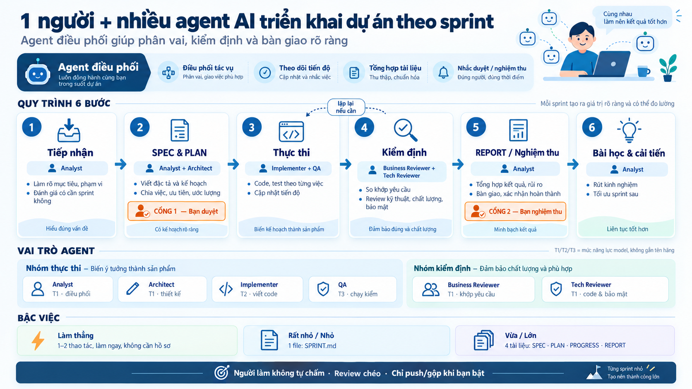

Giao việc bằng lời thường.
Agent làm theo sprint có kiểm định.
Bạn chốt phạm vi một lượt, duyệt kế hoạch và nghiệm thu ở hai cổng. Việc 1–2 thao tác rõ ràng, không chạm vùng rủi ro hay hành động không đảo ngược, được làm thẳng và tự kiểm.
Repo đang private — cần quyền truy cập repo để cài.
- Nói lời thường. Không cần biết thuật ngữ.
- Một lượt chốt phạm vi; sau đó duyệt kế hoạch và nghiệm thu.
- Người làm không tự chấm. Agent khác kiểm, ghi bằng chứng.
- Mọi việc có dấu vết. Tháng sau mở lại vẫn biết vì sao.
- Việc nhỏ đi đường nhẹ. Hồ sơ dày mỏng theo cỡ việc.
Sáu bước, hai cổng duyệt
Một sprint = một mục tiêu. Đội agent làm, ghi sổ và nhờ agent khác kiểm.

Luật ở một chỗ, chi tiết tách theo thư mục
Mỗi thư mục có README.md riêng. Xem cây đầy đủ.
Luật chơi
AGENTS.mdluật lõi, agent đọc mỗi phiênmethod/quy trình, cỡ việc, thang mức, bằng chứng, chuẩn coderoles/thẻ vai thực thi và kiểm địnhtiers/ba tier, bảng tier → model
Năng lực
skills/32 skill, agent tự gọi theo tình huốngagents/13 agent chuyên đềtemplates/khuôn hồ sơ sprint và sổ gốc
Công cụ và cài đặt
scripts/init · check · indextests/bộ test pytestsamples/order-desk/dự án mẫu đã dùng thậthosts/cài theo harnessdocs/tổng quan, xử lý sự cố, chuyển đổi
Đọc tiếp theo nhu cầu
Tính năng
Skill, agent, máy kiểm, sổ tập trung, chuẩn code, phiên bản, bậc việc.
Xem tính năng →Cách hoạt động
Sáu bước, hai cổng, vai và tier, kiểm định độc lập — kèm một ví dụ.
Xem quy trình →Cấu trúc repo
Cây thư mục đầy đủ, ý nghĩa từng file, bảng “tôi muốn … mở file …”.
Xem cấu trúc →Hồ sơ một sprint
SPEC · PLAN · PROGRESS · REPORT, ba sổ gốc và mã định danh.
Xem hồ sơ →Cài đặt và dùng
Để agent cài, hoặc tự làm trên Claude Code, Codex, Antigravity.
Xem cách cài →Hỏi đáp và giới hạn
Câu hỏi thường gặp và những chỗ còn chưa tới.
Xem hỏi đáp →Sẵn sàng cho sprint đầu tiên?
Cần Git, Python 3.9+ và quyền đọc repo (đang private). Cài xong, giao việc bằng lời thường.